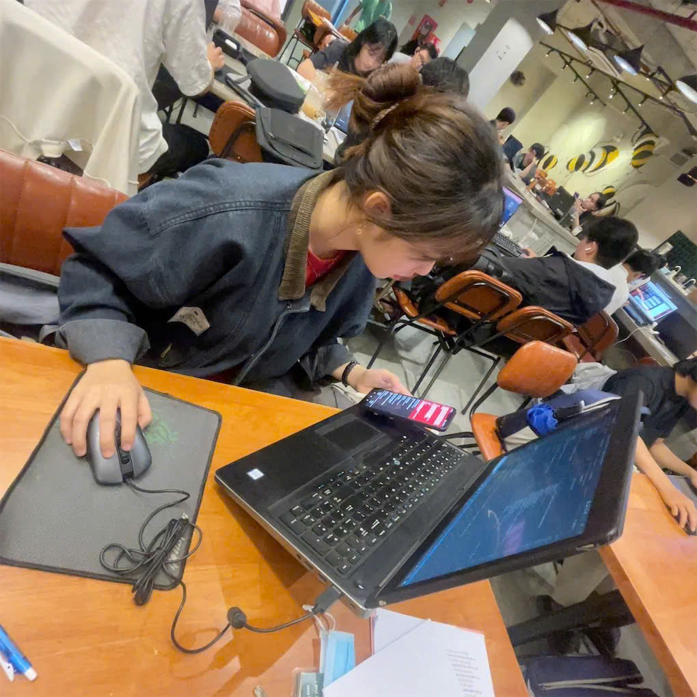
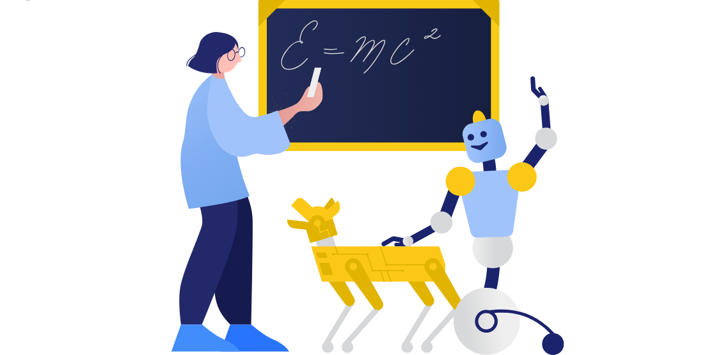

TRINH THI LAN ANH
( AI/SOFTWARE ENGINEER )
I'm passionate about AI and love exploring how intelligent systems can be designed, built, and improved. Through personal projects and experiments, I enjoy turning ideas into working solutions and learning new technologies along the way.

WHAT I CAN DO?

AI/MACHINE LEARNING
- ⚡
Strong grasp of Machine Learning, Deep Learning, and Generative AI principles.
- ⚡
Practical experience in Computer Vision and NLP projects using modern techniques.
- ⚡
Skilled in data preprocessing, model training, fine-tuning, and evaluation with TensorFlow, PyTorch, and Keras.
SOFTWARE/CLOUD COMPUTING
- ⚡
Deploying machine learning models as web apps using Streamlit, Flask, and FastAPI.
- ⚡
Building full-stack applications with ReactJS, NextJS, ExpressJS, ASP.NET, and MongoDB.
- ⚡
Containerizing and deploying applications using Docker and cloud platforms like AWS, Azure, GCP.
COMPUTER GRAPHICS
- ⚡
Understanding of core graphics concepts: rasterization, fractals, 2D and 3D rendering.
- ⚡
Experience with OpenGL, WebGL, and Three.js for interactive graphics development.
- ⚡
Enable to work with shaders, texture mapping, and lighting techniques in real-time rendering.